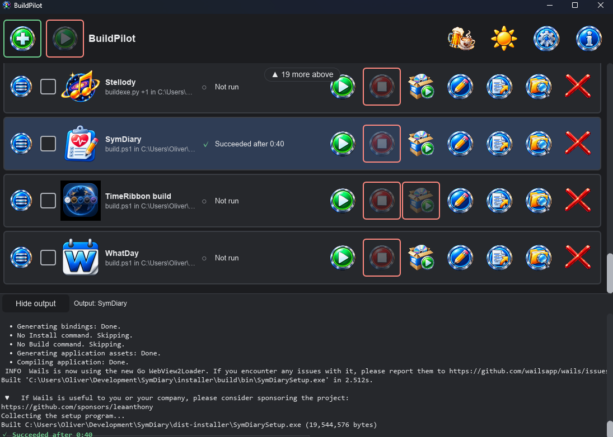
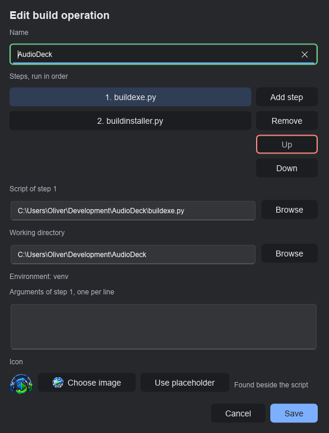
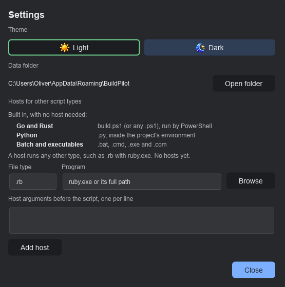

v1.2.0 Windows Free and open source
A flight deck for your build scripts.
BuildPilot remembers the scripts you run every day. It starts them side by side, shows each one's state and live output, then stops them with everything they started. It runs the commands you already have; it never becomes the build system.

The feature list
Your scripts, several at once, in one window.
What it does
- Remembers your builds. An operation is one or more
steps run in order, a working directory and a name.
.ps1,.bat,.cmd,.exe,.comand.pyrun out of the box; Settings maps any other type to the program that runs it. - Finds them for you. Point Add at a project folder (or a
folder of projects) and it proposes the build it recognises:
build.ps1alone, elsebuildexe.pythenbuildinstaller.py. Nothing is added until you confirm. - Uses your Python environment. A
venvin the project is found and activated for each step; an environment left active in your shell is undone first. - Runs several at once. Each run is its own process, with its state shown by a glyph and in words, plus the elapsed time. Tick rows to start them together. Two builds never share a folder.
- Knows how long a build takes. Beneath each row's status sits its typical build time: the median of its last five successful runs, so one slow build does not skew it. It is remembered when BuildPilot restarts, so a running build always has a yardstick.
- Shows output live. The tray follows the latest line until you scroll up. Lines are plain whatever stream they came on; the run's outcome closes it in green, red or grey.
- Stops the whole tree. Stop ends the script and every process it started, through a Windows job object.
- Launches the installer it built. Beside Stop, Launch
installer starts the project's setup program: the one set in Edit, else
the folder's name plus
Setup.exeindist-installerordist. It waits while the build runs and after one that was stopped or failed.
What it does not do
- Replace your build system. PowerShell, Cargo, npm and the rest stay in charge. Every script stays runnable without BuildPilot.
- Pipelines. No dependency graph, no conditions and no Run All. The only sequence is an operation's own steps.
- Build environments. It uses a Python environment that exists; it never creates, installs into or repairs one.
- Terminals. Output is shown as it arrives; a running script cannot be typed into.
- Touch your scripts. It never writes to, renames or deletes one. Remove takes an operation off the deck along with any icon BuildPilot copied for it and its run times; nothing else.
- Anything but Windows. Windows only, for good.
A closer look
Steps, environments, installers and hosts, in two dialogs.

venv. Steps are added, removed and reordered
here; the installer and the icon were found in the project.
.rb with
ruby.exe.How it is built
A small tool, held to a large standard.
BuildPilot is written in Rust with a Slint interface. Every number below was measured from the code, not rounded up for the page.
Tests, from pure rules through real processes started and stopped to the keyboard ring driven by real key events.
Of lines and of branches covered in the rules, the use cases and the setup program's policy. The build refuses to run below it.
Lines of requirements, each tied to the test that proves it. Every change of mind is a numbered amendment.
Network request: asking GitHub whether a newer release is out. It carries nothing about you or your scripts.
Administrator prompts of its own. It installs for your own account and runs with your normal rights; only an installer you launch may ask.
The least contrast of any text against its background, in light and dark, checked by a test.
Download
Install it once; add a project; press Run.
Version 1.2.0Windows
Windows 11 (Windows only)
Download for WindowsRun it and choose Install. It installs for your account only, so Windows never asks for administrator rights. Then choose Add, pick a script or a folder and press Run. Run setup again to update, repair or go back a version; to remove it, uninstall from Settings, then Apps.
What is new in this release · All releases · Source on GitHub
Supporting BuildPilot
Free. It stays free.
There is no paid tier, no licence key and no feature held back behind a donation. If BuildPilot saves you time, a contribution supports its maintenance. The same link sits in the toolbar as the drink button.
 Donate
Donate